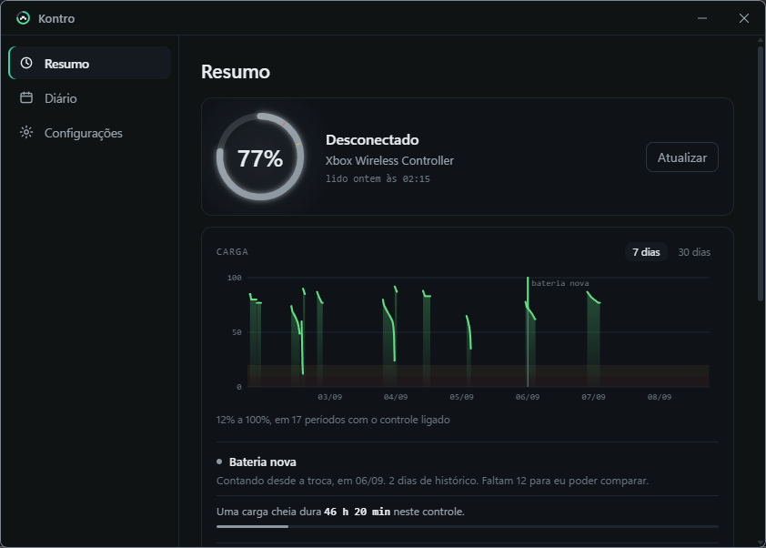
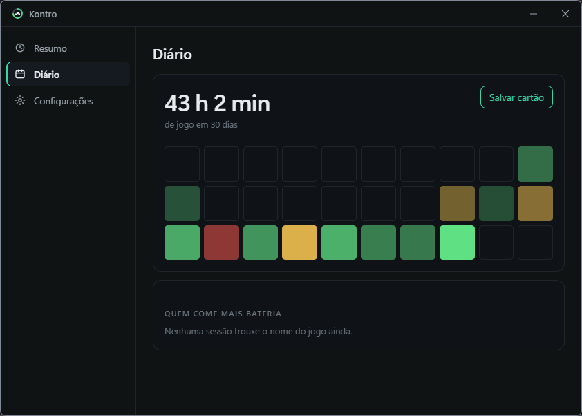
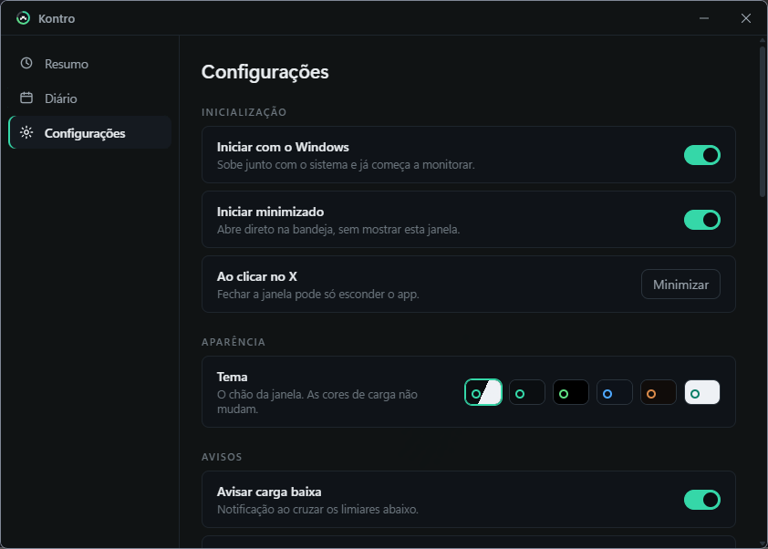

Quanto ainda
dá pra jogar?
O Kontro põe a carga do seu controle na bandeja do Windows — e responde essa pergunta em horas e minutos, a partir do consumo que ele mediu no seu próprio uso.
Grátis · código aberto · instala sem pedir administrador
77% não quer dizer nada sozinho
O Kontro acompanha quanto o seu controle gasta por hora e converte a carga em tempo de jogo. No gráfico, uma linha pontilhada continua a queda até a hora exata em que ela zera.
Se ainda não houver consumo medido, não aparece linha nenhuma. Ele prefere não responder a chutar.
- Aviso antes de acabar — nos limiares que você definir, não em números cravados.
- Histórico de 30 dias — com as faixas de aviso e crítico desenhadas no fundo.
- Saúde da bateria — depois de duas semanas ele compara o consumo de agora com o de antes e diz se está durando menos.

Ele sabe o que você jogou — e quanto custou de bateria
Quando um jogo está em tela cheia, o Kontro reconhece qual é e etiqueta a sessão com ele. A lista deixa de ser horário e porcentagem:
ontem, 21:14 · 2 h 40 min −18%
6,8 %/h
- Quanto cada jogo consome — um jogo de vibração pesada aparece na frente de um jogo leve.
- O mês num mapa — um quadradinho por dia, mais forte quanto mais você jogou.
- Um cartão para compartilhar — as horas do mês e o top 3, salvos como imagem.

Uma pílula no canto, e só quando precisa
Em tela cheia, o Kontro mostra a carga num canto discreto, sem tirar você do jogo. Depois de alguns segundos parada ela apaga sozinha, e volta ao normal quando o número muda.
Se a carga apertar, ela ganha contorno vermelho. Você escolhe o canto arrastando, e um atalho de teclado esconde e mostra quando quiser.
a pílula, em tamanho real, por cima do jogo
Seis temas, e o material do Windows 11
A janela usa Mica e o painel da bandeja usa Acrylic — o mesmo material do resto do sistema, com canto arredondado e sombra nativos. Se o Windows não entregar o efeito, o fundo sólido continua lá.
O tema muda o chão da janela. Verde, âmbar e vermelho continuam significando bateria em todos eles.

Ele não inventa
A carga vem direto do Bluetooth do controle — a mesma fonte que o Windows usa, exata de 0 a 100. E funciona com qualquer marca, porque o app procura por quem se declara controle, não por modelos conhecidos. Teclado, mouse e fone continuam invisíveis para ele, mesmo tendo bateria e estando pareados.
No cabo essa fonte some: o controle troca de protocolo e o que sobra é uma escala grosseira de quatro níveis. Medindo um controle com 77% reais, ela reportava 100%.
Por isso, no cabo, o Kontro mostra a última leitura conhecida com o horário dela. Mostrar nada é melhor que mostrar errado — é a regra que atravessa o app inteiro.
Instala em um clique
Baixe o Setup.exe da última release. A instalação é por usuário,
não pede administrador, e o app se atualiza sozinho.
Dica: o Windows 11 esconde ícones novos da bandeja atrás da setinha
^. Arraste o do Kontro para fora uma vez e ele fica fixo.